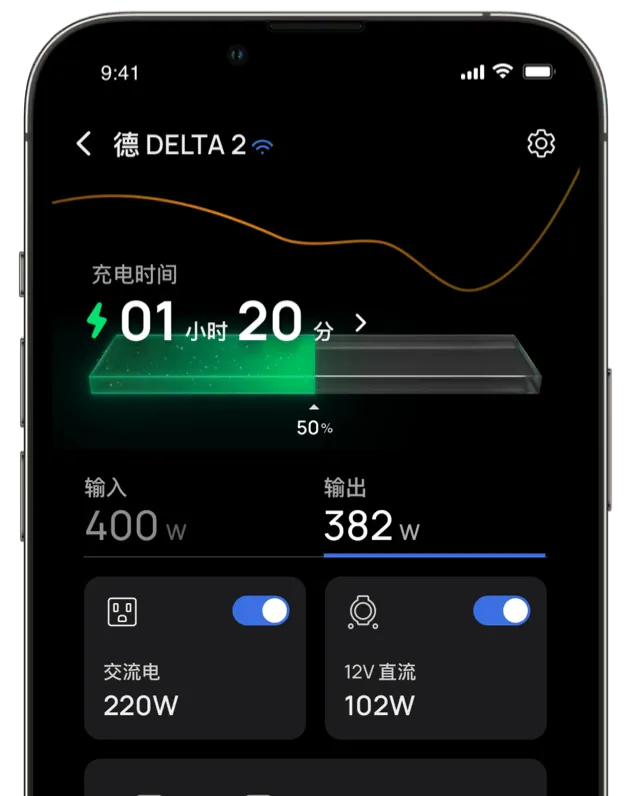
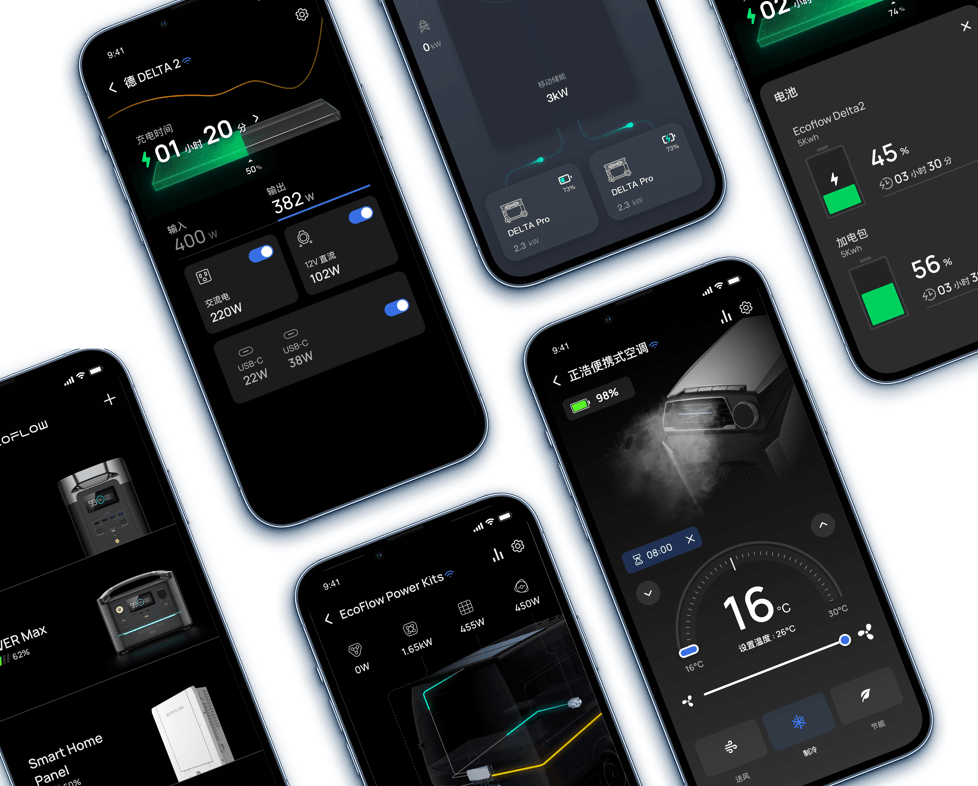

正浩电源入坑半年，踩过的那些让人想砸设备的坑
刚买正浩便携电源觉得挺简单，结果配网卡了半小时、蓝牙搜不到设备、远程控制延迟——分享几个真实踩过的坑和绕过它们的办法。
半年前入手ecoflow官网推荐的那款便携电源的时候，以为就是个大号充电宝——插上去就能用，App 扫个码完事。结果第一晚就卡了配网卡在那转圈转了半个多小时，后来又遇到蓝牙怎么都搜不到、端口控制半天不响应的问题。老实说这个软件看着简单，其实有几个坑新手一踩一个准。
第一个坑：配网死活连不上，App 在那转圈跟抽筋似的
症状：按 App 提示长按 IoT RESET，设备热点连得上，一到"连接家庭 Wi-Fi"那一步就开始转圈，转个一两分钟然后提示超时或密码错误。我第一次遇到时以为要把设备寄回厂家，差点发起退货申请。
原因：排查了一圈发现，大多数情况不是设备坏了，是几个低级细节没注意到。最常见的是 5GHz Wi-Fi 的问题——老款正浩设备只支持 2.4GHz，不支持 5GHz。现在路由器默认双频合一，手机也优先连 5GHz，结果设备一头雾水地去尝试 5GHz 当然失败。还有一种情况是手机蜂窝数据没关，配网时手机同时开着流量，某些系统会优先用流量而不是真的连接设备热点，设备根本收不到 Wi-Fi 密码。
另外还有两种容易忽略的情况：路由器开了 AP 隔离（访客网络模式），设备连上 Wi-Fi 后跟手机不在一个局域网里，配网当然完成不了；或者你家 Wi-Fi 密码里有 # & @ 这类特殊字符，早期固件对这些字符支持不好。
解法：最直接的办法是进路由器管理页，把 2.4GHz 和 5GHz 的 SSID 手动分开——给 2.4GHz 起个单独名字比如"Home-2.4G"，配网时连这个。或者临时关掉 5GHz 只用 2.4 配。配网时一定关掉手机流量，下拉通知栏点一下流量图标就行，配完再开。如果怀疑密码有问题，临时改成纯字母数字的密码试一下。AP 隔离那个在路由器设置里找"客户端隔离"或"访客网络隔离"关掉就好。
还有一招兜底：先用蓝牙模式连上设备（蓝牙对固件版本要求低得多），在 App 里检查固件更新并升级到最新版本，然后再重新走 IoT 配网。很多老固件不兼容新 App 的配网协议，升级一下就通了——后来去ecoflow文档翻了一下才确认这真的是最常见的原因之一。
第二个坑：蓝牙怎么都搜不到设备
症状：App 里点"添加设备"然后蓝牙扫描，扫了三分钟啥也没出来。或者搜到了但一直卡在"配对中"。
原因：蓝牙问题比配网简单得多——通常就是权限没给全或者蓝牙模块卡了。Android 12 引入的"附近的设备"权限最坑——你只给蓝牙权限不够，必须同时把"附近的设备"和"位置"开关都打开，蓝牙扫描才能正常工作。还有一种情况是之前配过别的手机，旧的配对记录损坏了，手机以为设备已配对就不主动发现。
解法：最有效的一步——重置蓝牙模块。设备关机状态下长按主电源按钮 5 秒以上，屏幕亮起后继续按住直到听到提示音再松开。这能解决 70% 的蓝牙问题。同时别忘了在手机上也删除旧的配对记录（系统设置 → 蓝牙 → 找到正浩设备 → 点"忽略此设备"）。权限那块要注意：Android 12+ 一定要在应用权限里单独给"附近的设备"允许，iOS 则在隐私与安全里检查蓝牙和位置服务的开关。另外配网时别在金属柜里或靠近微波炉这些地方，蓝牙信号会被严重干扰。

第三个坑：远程控制半天不响应，App 显示开关成功但实际没电
症状：在 App 里点了 USB 口的开关，界面显示"已关闭"，但插头插着的露营灯还是亮着，等了好几秒才暗下去。或者有时候点了根本没反应。
原因：远程控制延迟是正常的——IoT 模式下可能有 1~3 秒延迟，蓝牙/直连会快得多。但如果迟迟没反应，大概率是固件版本问题。某些新型号的精细端口控制功能（比如单独开关每个 AC 插座）需要设备固件达到一定版本，老固件根本没有这个能力。还有一种可能是过载保护触发了——如果 App 显示开关成功但实际没电，试试拔掉所有负载后再开一次，有可能是之前接的设备功率太大触发了保护。
解法：先等几秒确认是不是延迟。如果持续没反应，进 App 的设备详情页检查固件更新。端口那边如果经常过载，注意看一下设备的额定功率，别超了。长期不用的端口可以主动关掉省电——某些设备待机功耗虽小但积少成多，关掉端口等于彻底断电。
第四个坑：下载装完发现是旧版，功能对不上
症状：按照网上教程下载安装了 App，结果教程里说的功能（比如 AC Always On、TOU 模式）在自己的 App 里找不到，或者界面完全不一样。
原因：正浩 App 的分发渠道比较分散，不同地区版本不一样。国内版和海外版 APK 是两个独立安装包，从第三方 APK 下载站（APKPure 之类）下到的可能是旧版或者被二次打包的版本，功能不全甚至有广告。
解法：iOS 用户老老实实走 App Store 就好，这是唯一官方渠道。Android 用户优先从手机厂商自家应用商店（华为、小米、OPPO、vivo）搜"正浩"，这些渠道有额外安全审计。没有应用商店的设备可以从ecoflow下载拿 APK 直装包，别从第三方下载站下。

防坑清单（新手速查）
- 配网前手动分开双频 Wi-Fi 的 SSID，或者临时关 5GHz
- 配网时关掉手机蜂窝数据，配完再开
- 蓝牙搜不到先重置蓝牙模块 + 删除手机旧配对记录
- Android 12+ 必须给"附近的设备"权限，只给蓝牙权限不够
- 所有端口都关掉能省不少电，长期存放建议全关
知道这些坑之后，这软件其实相当省心。远程在被窝里关灯、出门在外检查设备是否待机、低谷电价自动充电这些功能用起来很舒服——前提是别在前面几个坑上浪费时间。顺便提一句，我整理的这款软件排查笔记和相关资料同步放在了GitHub、Gitee、GitCode三个仓库，方便不同网络环境的朋友查阅。